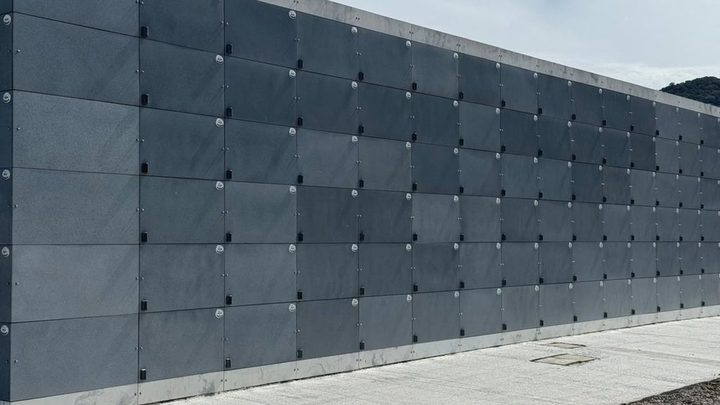

Itapema decretou a desapropriação de 47.796 m² ao lado do cemitério, e vai pagar em potencial construtivo em vez de dinheiro
A Prefeitura publicou nesta quarta a nota de preparativos do Cemitério Municipal para o Finados, que cai na segunda, 2 de novembro. Fomos aos atos oficiais e achamos dois que a nota não cita. O Decreto 226, de 3 de setembro, declara de utilidade pública 47.796 m² vizinhos ao cemitério, no Alto São Bento, e manda pagar a indenização em Transferência de Potencial Construtivo, sem fixar valor em reais. Tirada a área de preservação e aplicado um desconto de 40%, a área indenizável fica em 16.557,6 m². Em setembro a FAACI também liberou a licença de operação do Cemitério Vertical, de 600 gavetas.
